Save on expensive Odoo user licenses! Only buy one internal user and manage all employee portal operations easily.
This module provides a unified self-service portal (ESS) for employees, allowing them to log check-ins, request leave/time off, track attendance, update task pipelines, see sales info, download payslips, submit expenses, and view planning schedules without needing a full Odoo user account.
Allows managers to granularly customize each employee's access control to individual portal tiles from Odoo backend with zero code configuration.
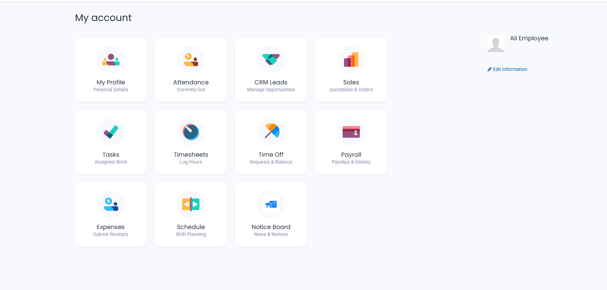
Select precisely which pages/features an employee should view from Odoo Settings tab.
Track live coordinates during check-in/out directly from the mobile-responsive interface.
Allows salespeople to view, edit and follow up on client opportunities from their own portal.
Check sales records and trace status logs (Draft, Confirmed, Done) with active chatter communication.
Submit time off requests, verify remaining leave balance, and view attendance history logs.
Security rules restrict portal users from viewing data assigned to other employees.
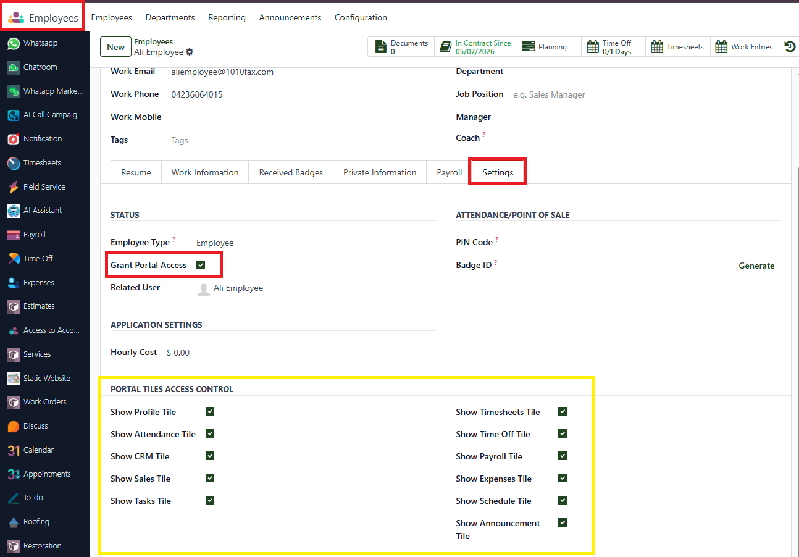
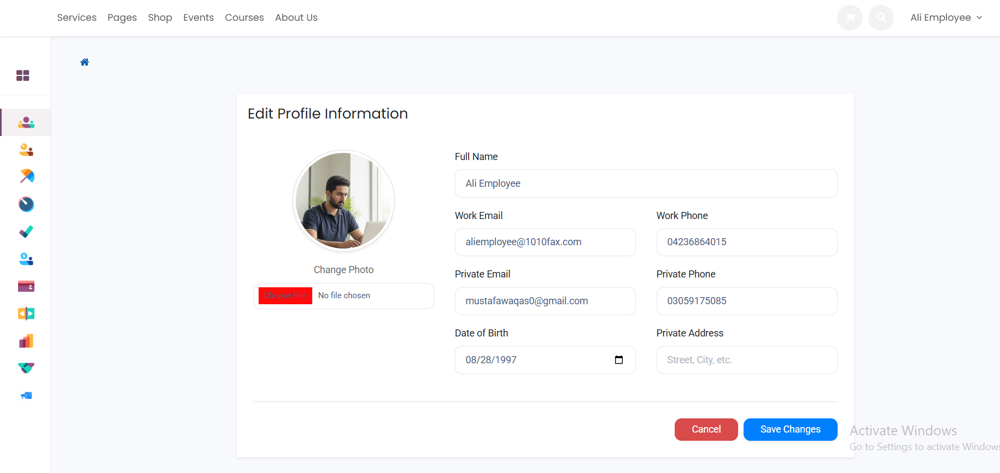
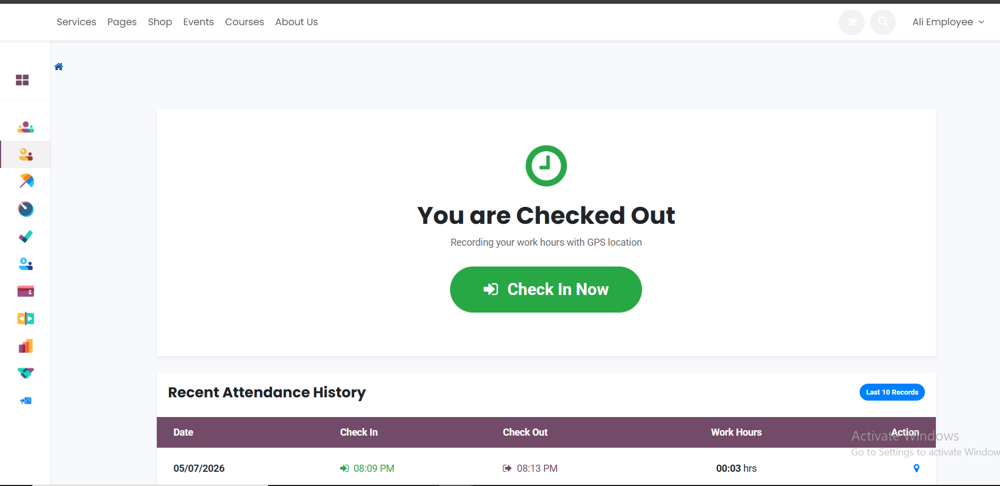
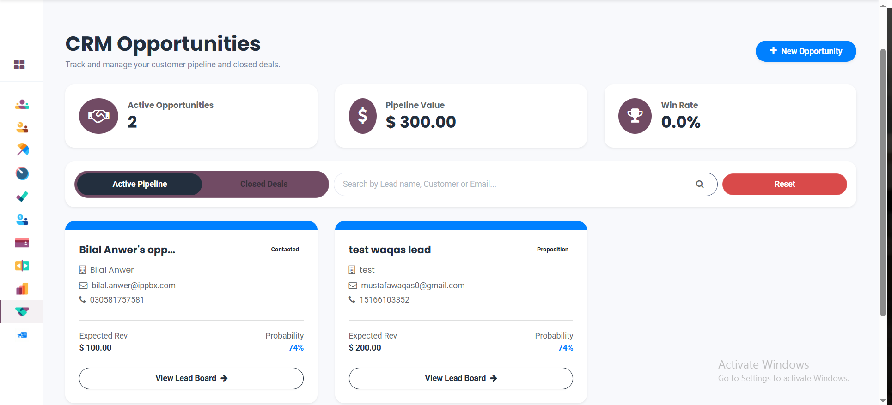
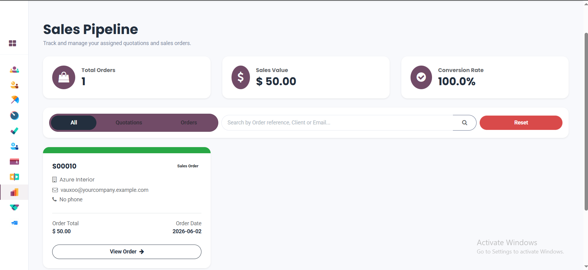
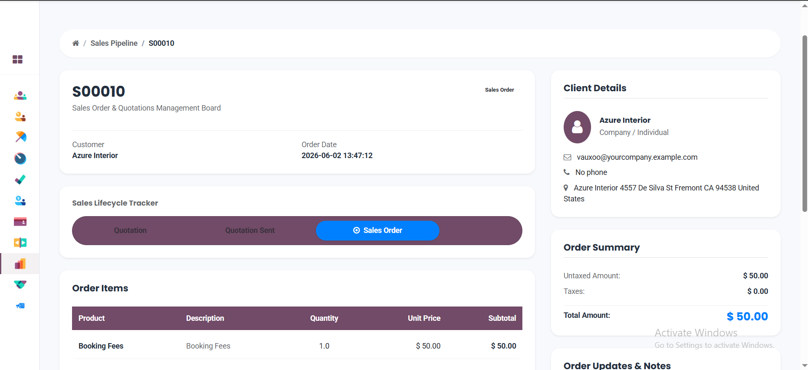
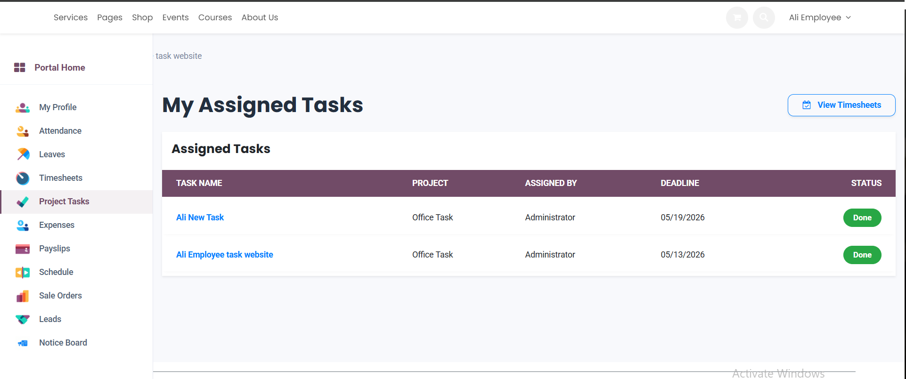
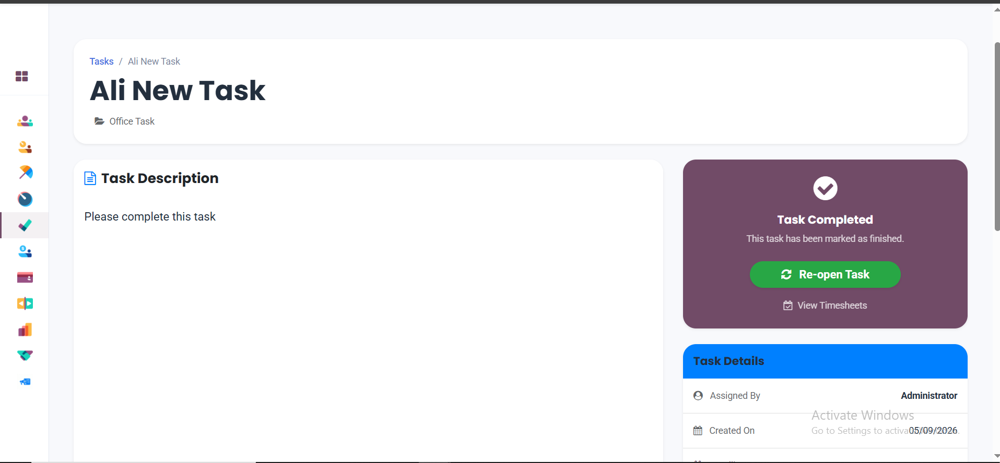
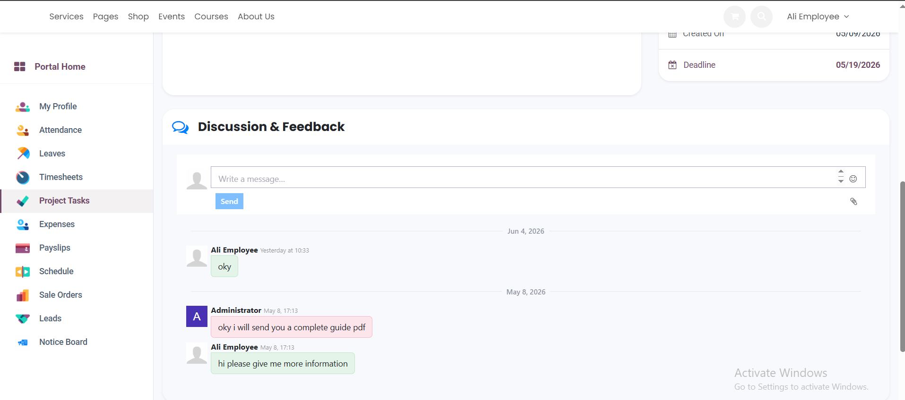
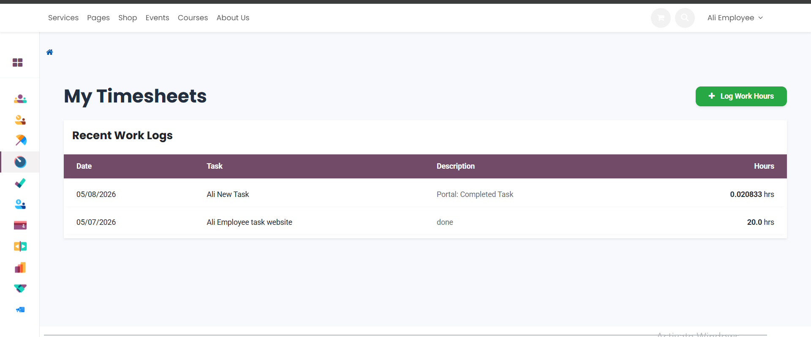
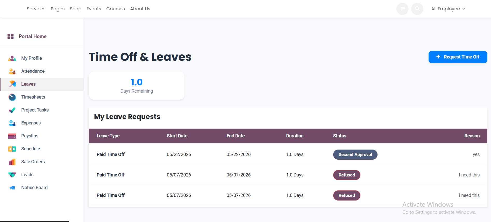
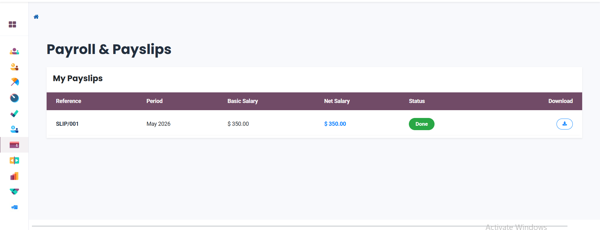
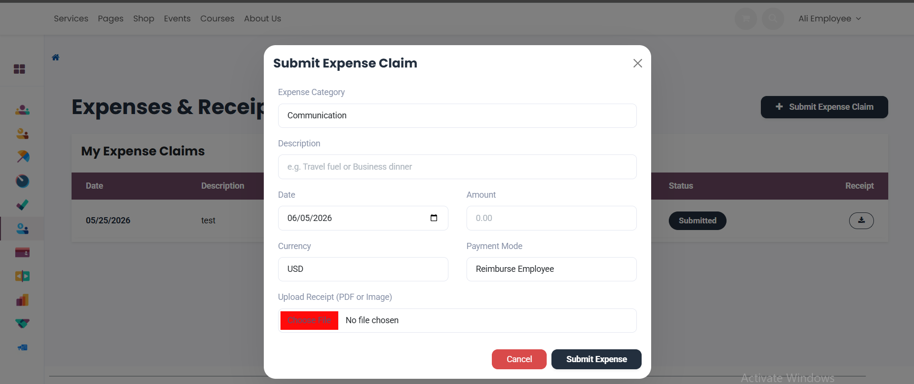
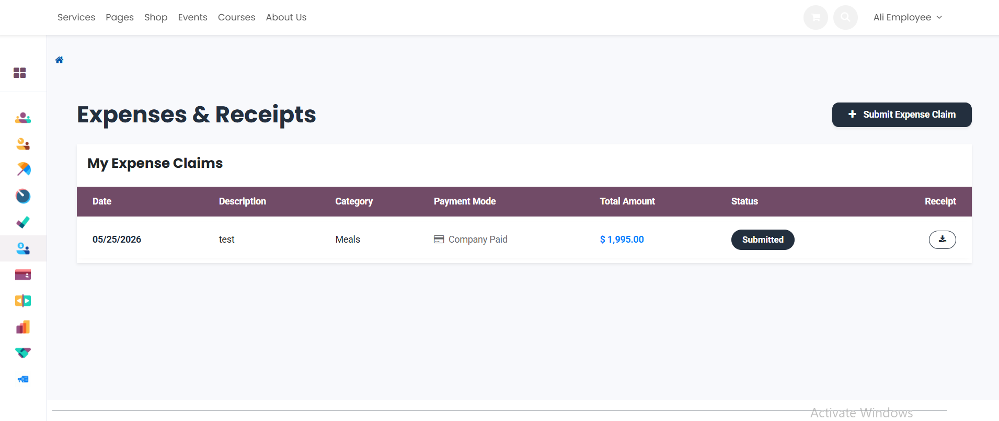
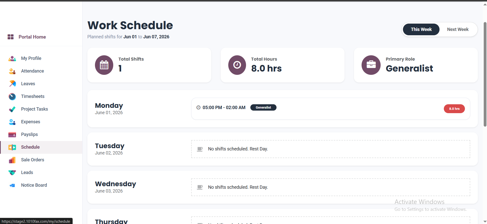
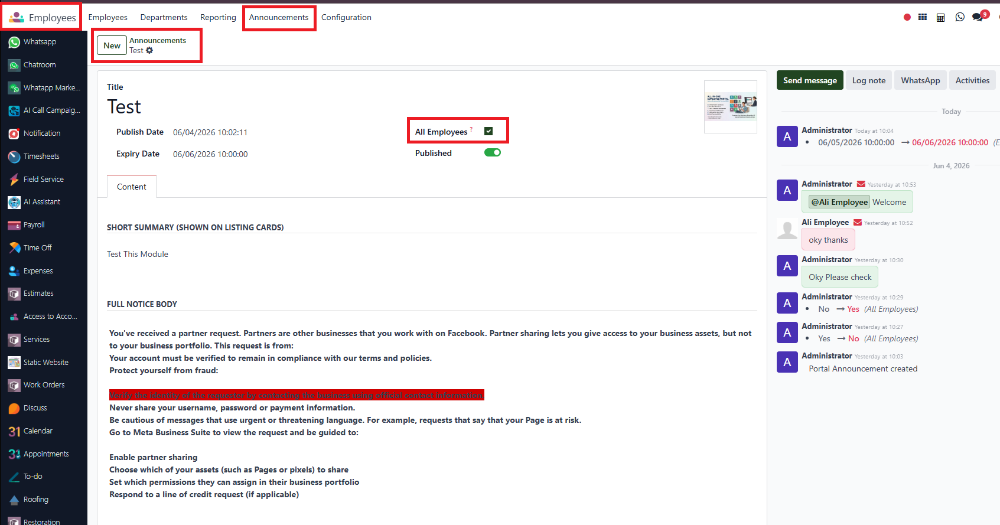
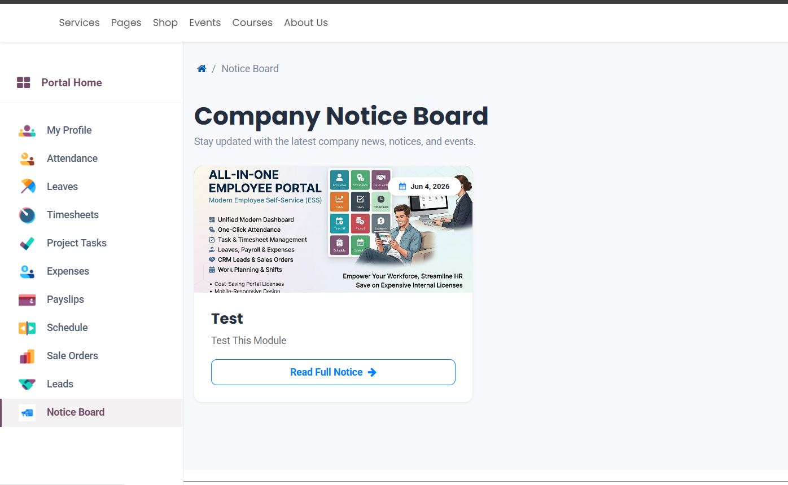